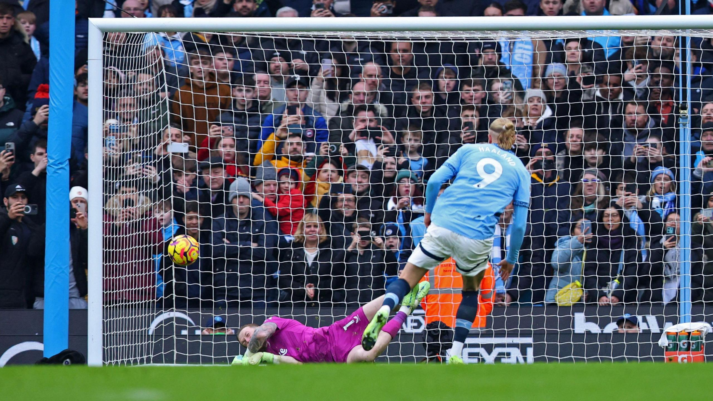
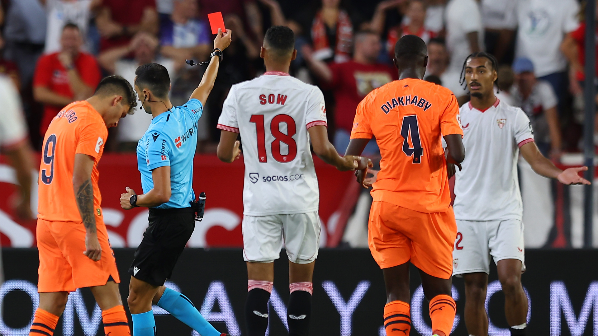

Olivia Rhye • 20 Junio 2025
Glorioso Penalti
El Alavés logró una victoria clave ante el Valencia en su lucha por la salvación para tomar distancia sobre el descenso.

Olivia Rhye • 20 Junio 2025
Primera Tarjeta Roja
El jugador más reconocido de la Fuerza Roja, debido a su implecable historial en sanciones, por primera vez recibió la primera de toda su vida.